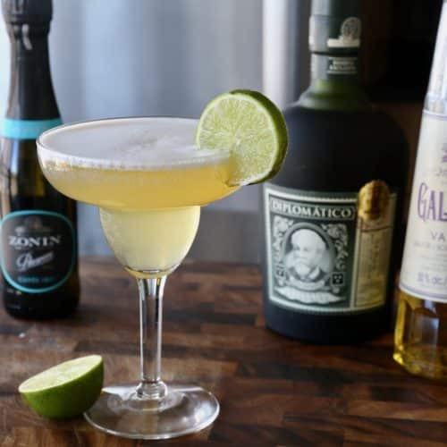

barracuda
Ingredientes:
- 45 ml de ron dorado
- 15 ml de Galliano
- 60 ml de jugo de piña
- Un chorrito de jugo de limón (10 ml aprox.)
- Un toque de vino espumoso
- Hielo en cubos
- Rodaja de piña o cereza para decorar
paso a paso:
-
Prepara la coctelera:
Añade hielo en cubos hasta la mitad de la coctelera.
-
Añade el ron:
Vierte 45 ml de ron dorado en la coctelera.
-
Añade el Galliano:
Agrega 15 ml de licor Galliano para darle aroma dulce y herbal.
-
Agrega los jugos:
Vierte 60 ml de jugo de piña y un chorrito de jugo de limón.
-
Agita fuerte:
Cierra la coctelera y agítala durante 10–15 segundos hasta que la mezcla esté bien fría.
-
Sirve:
Cuela la mezcla en un vaso de cóctel o copa fría.
-
Agrega el espumoso:
Completa con un pequeño toque de vino espumoso o Prosecco para darle burbujas.
-
Decora:
Añade una rodaja de piña o una cereza en el borde de la copa.
